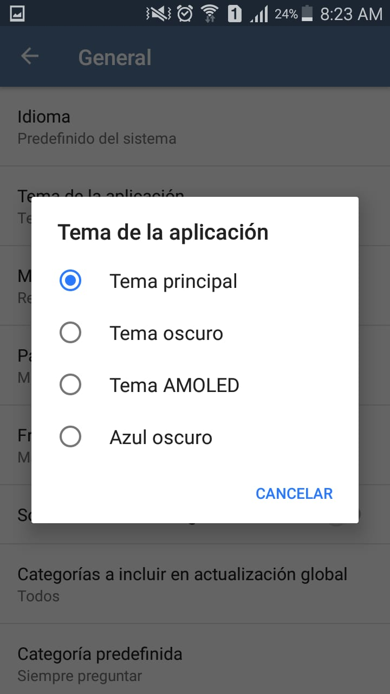

Lista de funcionalidades
Aquí podrás encontrar una lista de todas las funcionalidades disponibles en Tachiyomi
Mi librería
Esta es la página inicial de la aplicación. Aquí se muestran los mangas que se tienen añadidos. Se tiene una barra de búsqueda para filtrar los mangas por nombre.
Actualizaciones de librería
En esta vista se pueden ver los capítulos recientemente añadidos de los mangas que estén en nuestra librería.
Leído recientemente
En esta vista se pueden ver los capítulos que se han leído recientemente, ya sea que sus respectivos mangas estén en la librería del usuario o no.
Catálogos
En esta vista se pueden ver los catálogos correspondientes a las extensiones instaladas. Para poder leer un manga de una fuente estecífica, es necesario instalar su extensión.
Extensiones
En esta vista se pueden ver las extensiones disponibles e instaladas. En esta vista se descargan las extensiones para tener acceso a los mangas de cada fuente. También se pueden actualizar las extensiones ya instaladas.
Configuración
Esta es la vista de configuración.
Configuración general
En esta vista se tienen opciones generales de la aplicación, tales como el idioma de la aplicación, el tema, y la frecuencia de actualización de las librerías.
Configuración del lector
En esta vista se tienen opciones del lector de manga; algunas de estas son la orientación de la lectura, el color de fondo, y opciones de paginado y navegación.
Opciones de descarga
En esta vista se tienen opciones de descarga.

Opciones avanzadas
En esta vista se tienen opciones avanzadas, donde se pueden realizar acciones como borrar datos de caché y cookies, borrar redundancia de la base de datos, y demás.
Detalle de un manga

Descarga de capítulos
Cola de descargas
Progreso de descargas en panel de notificación
Actualizaciones de librería en panel de notificación

Categorías

Mover a categorías
Lista de capítulos de un manga
En la lista de capítulos, se pueden hacer varias operaciones, como cambiar el orden de los capítulos, cambiar el modo de visulización de éstos, filtrar los capítulos, descargarlos, y eliminar aquellos que estén descargados.

Lector de manga
Color páginas

Opciones del lector (mientras el lector está abierto)

Siguiente capítulo
En los botones de navegación del lector, está la opción de saltar al siguiente capítulo. Sin embargo, la información del número de páginas y la página actual en dicho lector no se actualiza al cambiar de capítulo con esta opción, se actualiza al cambiar de página.
Compartir manga
Abrir en navegador
Esta funcionalidad permite abrir un manga desde la fuente de dicho manga en un navegador web.
Abrir vista web
Esta funcionalidad es muy similar a la anterior, solo que se renderiza el contenido web en la misma aplicación en vez de abrir un navegador.